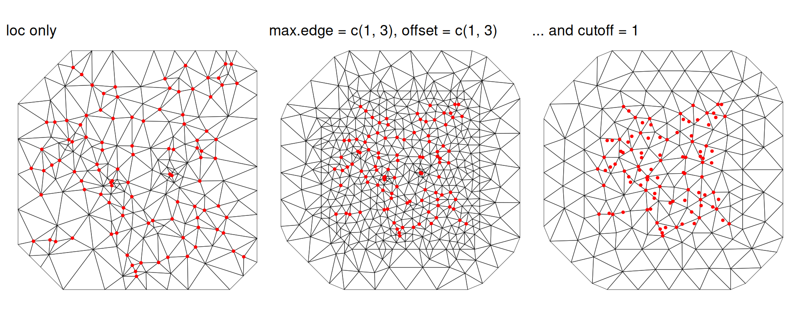
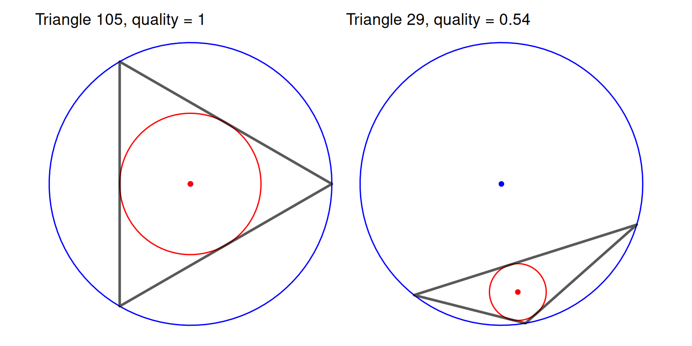
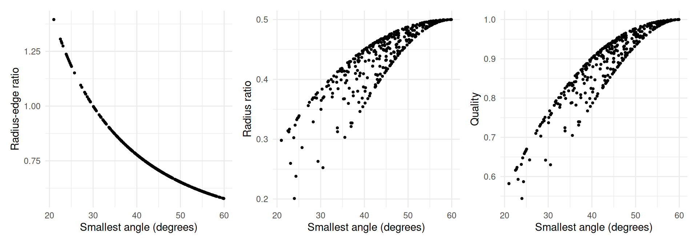
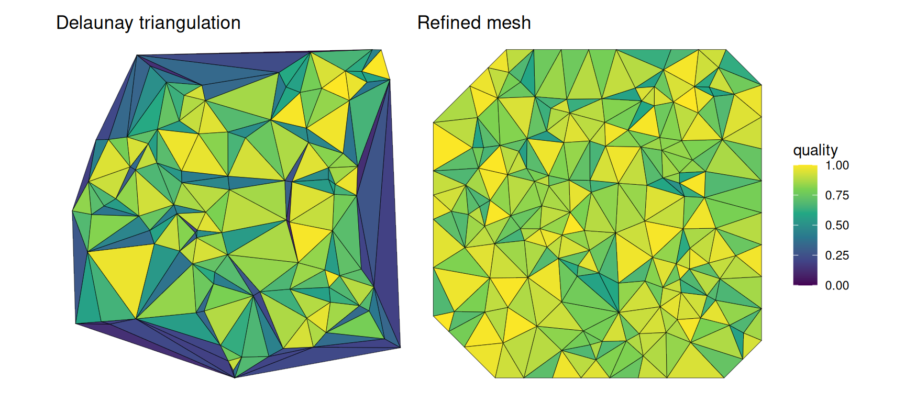

Packages used in this chapter
library(stelfi)
library(ggplot2)All of the spatial models in stelfi (the LGCPs of Chapter 6 and Chapter 7, and the spatiotemporal self-exciting models of Chapter 8) need a mesh: a triangulation of the study region. This chapter describes what the mesh is used for, how to build one, and how to check whether it is any good, both geometrically (using meshmetrics()) and for the data at hand.
A Gaussian random field \(G(s)\) is a continuous surface, so it cannot be estimated directly. The SPDE approach of Lindgren, Rue, and Lindström (2011) represents it by its values at the nodes (vertices) of a triangulation of the study region, and interpolates linearly between the nodes within each triangle. The field is then described by a finite number of values (one per node), and these have a multivariate normal distribution with a sparse precision matrix built from the geometry of the triangles. This is what makes fitting fast.
The mesh therefore controls
stelfi assigns each event, and each piece of the study region, to its nearest mesh node (i.e., to the cell of the “dual” mesh around that node, see get_weights()), so detail at scales smaller than the triangles is lost.Note that the mesh is only used to represent the random field (and to approximate the integral of the intensity over the study region). The study region itself is given by the sf argument of the fit_*() functions, and the parts of the mesh outside it do not contribute any area.
In stelfi (and inlabru) meshes are built using the fmesher package. The key arguments of fmesher::fm_mesh_2d() are:
loc: locations (usually the observed events) that the mesh is built around, so there are mesh nodes close to the data;boundary: (optional) a polygon the mesh should follow, typically the study region (converted using fmesher::fm_as_segm()). Alternatively loc.domain gives a set of points whose convex hull is used, and offset how far beyond it the mesh should extend;max.edge: the largest allowed triangle edge length. A vector of length two, c(inner, outer), gives a finer mesh inside the region and a coarser mesh in an outer extension, which reduces the inflated variance of the field near the edge of the mesh;cutoff: the minimum allowed distance between nodes. Locations closer together than this share a node, which avoids lots of tiny triangles where events are clustered; andmin.angle: the smallest allowed interior angle of a triangle (21° by default, see Section 5.3).The units of max.edge, cutoff and offset are those of the coordinates, so they should be chosen relative to the size of the study region (and, ideally, the range of the field). To illustrate, 100 locations are simulated uniformly in a 10 by 10 square and three meshes are built around them: one with only loc given, one with a finer inner and coarser outer part, and one where the cutoff is larger.
set.seed(1)
pts <- data.frame(x = runif(100, 0, 10), y = runif(100, 0, 10))
mesh_default <- fmesher::fm_mesh_2d(loc = as.matrix(pts))
mesh_inner_outer <- fmesher::fm_mesh_2d(loc = as.matrix(pts), max.edge = c(1, 3), offset = c(1, 3))
mesh_cutoff <- fmesher::fm_mesh_2d(loc = as.matrix(pts), max.edge = c(1, 3), offset = c(1, 3),
cutoff = 1)
c(default = mesh_default$n, inner_outer = mesh_inner_outer$n, cutoff = mesh_cutoff$n) ## nodes default inner_outer cutoff
205 493 158 The meshes are converted to sf objects using mesh_2_sf() so that they can be plotted with ggplot2.
plot_mesh <- function(mesh, title) {
ggplot() + geom_sf(data = mesh_2_sf(mesh), fill = NA, linewidth = 0.2) +
geom_point(data = pts, aes(x = x, y = y), col = "red", size = 0.8) +
theme_void() + ggtitle(title)
}
patchwork::wrap_plots(
plot_mesh(mesh_default, "loc only"),
plot_mesh(mesh_inner_outer, "max.edge = c(1, 3), offset = c(1, 3)"),
plot_mesh(mesh_cutoff, "... and cutoff = 1"),
nrow = 1)
With only loc the mesh simply joins up the locations (with some extra nodes added to avoid small angles), so the triangles are of very different sizes and the mesh stops at the convex hull of the data. Setting max.edge and offset gives triangles of a more even size and an outer extension with larger triangles. Increasing cutoff merges nearby locations, giving fewer nodes, at the cost of no longer having a node at every event.
There is a trade-off. A mesh that is too coarse cannot capture spatial variation at a scale smaller than its triangles, while a mesh that is too fine is slow and memory-hungry and can make fitting unstable. A common rule of thumb is that max.edge (inner) should be no more than about a fifth of the range of the field, and that the outer extension should be at least about the range, so that the edge effects do not reach the study region. Since the range is not known before fitting, it is good practice to fit the model using a few meshes and check that the conclusions do not change. This is done for the terrorism events in Iraq (Section 6.3.2) in Sensitivity to the mesh, which also shows what can happen when the data have spatial structure at every scale.
Even if the mesh is fine enough for the data, poorly shaped triangles can cause numerical problems. The precision matrix of the field is built from matrices whose entries depend on the cotangents of the interior angles of the triangles, and these become very large as an angle approaches 0° (or 180°). Long thin triangles, or neighbouring triangles of very different sizes, can therefore make the precision matrix badly conditioned, the optimiser unstable, and the interpolated field a poor approximation of a smooth surface.
The function meshmetrics() takes a mesh and returns an sf object with one row per triangle (in the same order as mesh$graph$tv) and the following columns:
| Column | Description | Equilateral triangle | Degenerate triangle |
|---|---|---|---|
V1, V2, V3 |
The indices of the triangle’s vertices (mesh nodes) | ||
ID |
The triangle number | ||
angleA, angleB, angleC |
The interior angles (in degrees) | 60° | min \(\to\) 0° |
circumcircle_R |
The circumradius \(R\) | ||
c_Ox, c_Oy |
The centre of the circumcircle (circumcentre) | ||
incircle_r |
The inradius \(r\) | ||
i_Ox, i_Oy |
The centre of the incircle (incentre) | ||
radius_edge |
The radius-edge ratio, \(R/l_{\min}\) | \(1/\sqrt{3} \approx 0.577\) | \(\to \infty\) |
radius_ratio |
The radius ratio, \(r/R\) | \(1/2\) | \(\to 0\) |
area |
The area \(A\) | \(\to 0\) | |
quality |
\(\frac{4\sqrt{3}A}{\sum_{i = 1}^3 L_i^2}\) | 1 | \(\to 0\) |
Here \(l_{\min}\) is the length of the shortest edge and \(L_1, L_2, L_3\) are the lengths of the three edges. Each of these is described below, using the example mesh horse_mesh (see Chapter 10).
ID angleA angleB angleC radius_edge radius_ratio area quality
1 1 72.52737 56.41726 51.05537 0.6428770 0.4819599 1.2638698 0.9692923
2 2 55.86943 72.66586 51.46472 0.6392025 0.4820210 0.8832081 0.9695813
3 3 63.57095 65.27823 51.15083 0.6420134 0.4905740 0.9632860 0.9825119
4 4 65.92947 75.46785 38.60267 0.8013899 0.4402754 0.5677013 0.8843856
5 5 66.89736 56.55132 56.55132 0.5992474 0.4947592 0.4883824 0.9909965
6 6 61.46106 60.53316 58.00578 0.5895520 0.4995094 1.1719528 0.9991213The interior angles are the most direct description of the shape of a triangle: an equilateral triangle has three angles of 60°, and a “sliver” (a long thin triangle) has at least one very small angle. Of all the possible triangulations of a set of points, the Delaunay triangulation is the one that maximises the smallest angle, but even so it can contain very small angles (see below). fmesher therefore refines the triangulation, adding extra nodes until no angle is smaller than min.angle (21° by default) and no edge is longer than max.edge, where possible. The smallest angle of each triangle is therefore a good first check:
Min. 1st Qu. Median Mean 3rd Qu. Max.
21.00 39.04 44.93 44.43 50.49 59.92 As expected, no angle in horse_mesh is smaller than 21°.
A triangle’s circumcircle is the unique circle that passes through all three of its vertices, and its incircle is the largest circle that fits inside it (i.e., that touches all three edges). Their radii are the circumradius \(R\) and the inradius \(r\), and their centres are the circumcentre and incentre. The circles of two triangles from horse_mesh are shown below: a well shaped triangle (left) and the worst shaped triangle in the mesh (right).
circle <- function(x, y, radius, n = 100) {
a <- seq(0, 2 * pi, length.out = n)
data.frame(x = x + radius * cos(a), y = y + radius * sin(a))
}
plot_circles <- function(id) {
tri <- metrics[metrics$ID == id, ]
ggplot() +
geom_path(data = circle(tri$c_Ox, tri$c_Oy, tri$circumcircle_R), aes(x = x, y = y),
col = "blue") +
geom_path(data = circle(tri$i_Ox, tri$i_Oy, tri$incircle_r), aes(x = x, y = y),
col = "red") +
geom_sf(data = tri, fill = NA, linewidth = 1) +
geom_point(aes(x = tri$c_Ox, y = tri$c_Oy), col = "blue") +
geom_point(aes(x = tri$i_Ox, y = tri$i_Oy), col = "red") +
theme_void() + ggtitle(paste0("Triangle ", id, ", quality = ", round(tri$quality, 2)))
}
patchwork::wrap_plots(plot_circles(which.max(metrics$quality)),
plot_circles(which.min(metrics$quality)), nrow = 1)
The incentre (red) always lies inside the triangle, but the circumcentre (blue) lies outside it whenever the triangle has an obtuse angle (greater than 90°). The circumcircles are central to how meshes are built: in a Delaunay triangulation no node lies inside the circumcircle of any triangle, and the refinement algorithm improves a badly shaped triangle by adding a node at its circumcentre.
The radii are not very useful on their own, since they depend on the size of the triangle as well as its shape, but the two ratios below do not.
The radius-edge ratio, \(R/l_{\min}\), is the circumradius divided by the length of the shortest edge. It is smallest, \(1/\sqrt{3} \approx 0.577\), for an equilateral triangle and it is unbounded above: it becomes very large for a sliver, whose short edge is small compared with the circle through its vertices. In two dimensions it is directly related to the smallest angle \(\theta_{\min}\) of the triangle,
\[\frac{R}{l_{\min}} = \frac{1}{2 \sin \theta_{\min}},\]
so a bound on the smallest angle is the same as a bound on the radius-edge ratio. This is the measure used by mesh refinement algorithms: a minimum angle of 21° corresponds to a radius-edge ratio of at most \(1/(2\sin 21°) \approx\) 1.395.
The radius ratio, \(r/R\), is the inradius divided by the circumradius. The incircle can never be more than half the size of the circumcircle, so the radius ratio is at most \(1/2\), for an equilateral triangle, and it tends to 0 as the triangle becomes degenerate. Unlike the radius-edge ratio it depends on all three angles, \(r/R = 4\sin\frac{A}{2}\sin\frac{B}{2}\sin\frac{C}{2}\), and it is bounded, so it is easier to compare between meshes and to plot on a common scale.
The area of each triangle describes the resolution of the mesh rather than the shape of its triangles. Within the study region the triangles should be small compared with the range of the field (Section 5.2.1), and their size should change gradually: a large triangle next to a small one means the field is represented with very different precision in neighbouring places. Larger triangles in the outer extension of the mesh are intended, as the field there is only needed to reduce edge effects. Note that the area is in the squared units of the coordinates (e.g., km\(^2\)).
The quality measure,
\[\frac{4\sqrt{3}A}{\sum_{i = 1}^3 L_i^2},\]
compares the area of the triangle with the sum of its squared edge lengths. The constant \(4\sqrt{3}\) makes it equal to 1 for an equilateral triangle (the triangle with the largest area for a given sum of squared edges), and it tends to 0 for a degenerate triangle. Like the radius ratio it depends on all three angles and lies between 0 and 1, so it is a convenient single summary of the shape of each triangle.
In two dimensions a triangle can only be badly shaped by having a small angle, so all of the shape measures above flag the same triangles; they differ in how they rank triangles that are not degenerate. The plot below shows the measures for every triangle in horse_mesh against the smallest angle.
m_df <- sf::st_drop_geometry(metrics)
m_df$min_angle <- min_angle
patchwork::wrap_plots(
ggplot(m_df, aes(x = min_angle, y = radius_edge)) + geom_point(size = 0.8) +
xlab("Smallest angle (degrees)") + ylab("Radius-edge ratio") + theme_minimal(),
ggplot(m_df, aes(x = min_angle, y = radius_ratio)) + geom_point(size = 0.8) +
xlab("Smallest angle (degrees)") + ylab("Radius ratio") + theme_minimal(),
ggplot(m_df, aes(x = min_angle, y = quality)) + geom_point(size = 0.8) +
xlab("Smallest angle (degrees)") + ylab("Quality") + theme_minimal(),
nrow = 1)
The radius-edge ratio is a function of the smallest angle alone, whereas for the radius ratio and quality there is some spread for a given smallest angle, because they also depend on the other two angles.
Mapping the metrics is a quick way to see where the badly shaped or unusually sized triangles are. For horse_mesh the triangles are of a fairly even size and all are reasonably well shaped.
For comparison, below is the plain Delaunay triangulation of the 100 simulated locations from above (built using fmesher::fm_delaunay_2d(), which does not refine the triangulation), alongside a refined mesh around the same locations. The plain triangulation has many slivers, particularly around the edge of the data where the convex hull is joined up by long thin triangles.
mesh_delaunay <- fmesher::fm_delaunay_2d(as.matrix(pts))
mesh_refined <- fmesher::fm_mesh_2d(loc = as.matrix(pts), max.edge = 2, cutoff = 0.3)
metrics_delaunay <- meshmetrics(mesh_delaunay)
metrics_refined <- meshmetrics(mesh_refined)
patchwork::wrap_plots(
ggplot(metrics_delaunay, aes(fill = quality)) + geom_sf() + theme_void() +
scale_fill_viridis_c(limits = c(0, 1)) + ggtitle("Delaunay triangulation"),
ggplot(metrics_refined, aes(fill = quality)) + geom_sf() + theme_void() +
scale_fill_viridis_c(limits = c(0, 1)) + ggtitle("Refined mesh"),
nrow = 1, guides = "collect")
The distributions of the metrics make the difference clear:
summarise_metrics <- function(m) {
min_angle <- pmin(m$angleA, m$angleB, m$angleC)
c(triangles = nrow(m), min_angle = min(min_angle), max_radius_edge = max(m$radius_edge),
min_radius_ratio = min(m$radius_ratio), min_quality = min(m$quality),
prop_quality_below_0.5 = mean(m$quality < 0.5))
}
round(rbind(delaunay = summarise_metrics(metrics_delaunay),
refined = summarise_metrics(metrics_refined)), 3) triangles min_angle max_radius_edge min_radius_ratio min_quality
delaunay 189 0.36 79.678 0.000 0.01
refined 272 21.00 1.395 0.177 0.51
prop_quality_below_0.5
delaunay 0.344
refined 0.000There is no single threshold that makes a mesh “good”, but the following are useful checks:
cutoff with clustered locations) that the refinement could not satisfy.cutoff where events are clustered) add nodes, and computation, without adding much information.sf, as below for horse_mesh and the polygon horse_sf it was built from. Min. 1st Qu. Median Mean 3rd Qu. Max.
0.5441 0.8530 0.9182 0.8963 0.9638 1.0000 If a mesh has poorly shaped triangles, increasing cutoff (so that clustered locations share nodes), simplifying a very detailed boundary (e.g., using sf::st_simplify()), or adjusting max.edge and offset usually helps. Once the mesh is well shaped, check that it is fine enough for the data by refitting the model on a few meshes (see Sensitivity to the mesh in Section 6.3.2).